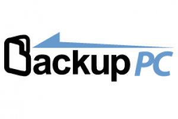

Je m'appelle Consuegra Yanis j'ai 21 ans, je suis étudiant en BTS SIO dans la spécialité SISR (Système Infrastructure et Sécurité Réseaux) au lycée Gabriel Fauré. J'ai réalisé ce portfolio afin de présenter plusieurs projets que j'ai effectués durant mon BTS et également en stage.
Durant mon parcours, j'ai réalisé un projet nommé BMS. Il consiste à effectuer plusieurs sortes de tâches, notamment l'installation de solutions permettant de gérer un réseau informatique appartenant à une entreprise. On peut prendre pour exemple l'installation d'un serveur de fichiers, d'une solution de supervision et même l'utilisation de scripts PowerShell qui permettent l'automatisation de diverses tâches.
Ce projet m'a permis de m'améliorer dans le domaine des réseaux, car je suis désormais capable de créer une infrastructure réseau avec plusieurs éléments qui la composent. De plus, ce projet m'a également aidé à améliorer mes compétences en résolution de problèmes et à favoriser la recherche de solutions pour surmonter les différentes erreurs rencontrées.
Le but de ce projet était également d'installer différents services, tout comme dans le projet BMS. Parmi ces services, on retrouve l'installation et la configuration d'un serveur de domaine, la mise en place de GLPI et Fusion Inventory, l'installation et la configuration d'un VPN, un cluster de pfSense ainsi qu'un bureau à distance. Pour te donner une petite idée du projet MDL, voici le schéma complet de l'infrastructure réseau :
Ce projet m'a également permis de développer de nombreuses compétences techniques diverses, d'améliorer ma résolution de problèmes et d'approfondir mes connaissances dans les domaines du réseau et de la cybersécurité.
Grésivaudan Informatique propose diverses solutions d'infrastructure pour les PME et fournit également une assistance dans le domaine du matériel informatique pour ses clients. Mon stage de première année était axé sur les réseaux et la cybersécurité. En effet, j'ai effectué de nombreuses installations de logiciels permettant le fonctionnement d'un réseau, tels que BackupPC, Nagios et Suricata. J'ai également eu l'occasion de m'impliquer dans le domaine de la cybersécurité en aidant une entreprise victime d'un ransomware et en apportant mon assistance à des clients victimes de cyberattaques. J'ai également participé à des réparations de matériel informatique. Les activités réalisées pendant ce stage sont répertoriées dans mon "journal de bord", disponible dans la section "À propos de moi".

BackupPC est un logiciel open-source conçu pour effectuer des sauvegardes de données sur des ordinateurs distants. Il utilise le protocole de transfert de fichiers rsync ou SSH pour sauvegarder les fichiers et répertoires des machines clientes vers un serveur de sauvegarde central. BackupPC est principalement utilisé dans les environnements réseau où plusieurs ordinateurs doivent être sauvegardés de manière régulière. On peut réaliser des sauvegardes dupliquées, les planifier et les restaurer. BackupPC est une solution de sauvegarde populaire, surtout pour les petites et moyennes entreprises qui cherchent une solution économique et flexible pour protéger leurs données.
Suricata est un système de détection d'intrusion en temps réel (IDS) et de prévention des intrusions (IPS) open-source. Il est conçu pour analyser le trafic réseau en temps réel et détecter les activités malveillantes, les tentatives d'intrusion et les comportements anormaux sur un réseau. Les principales fonctionnalités de Suricata sont :
Détection de menace : Suricata utilise des règles de filtrages pour analyser des attaques commes des scans de ports, des attaques par déni de service de distribution (DDoS) ou des attaques qui exploites des vulnérabilités.
Analyse du contenu du trafic : Suricata peut inspecter en profondeur le contenu des paquets réseau, y compris les en-têtes et les données, pour détecter les menaces et les comportements malveillants.
Capture de paquets : Il peut enregistrer les paquets pour faire une analyse plus profonde des incidents de sécurité.
Fonctionnement en temps réel : Suricata peut analyser le trafic réseau en temps réel, ce qui permet une détection rapide des menaces et une réponse immédiate aux incidents.
IPS intégré : Suricata peut également être configuré en tant que système de prévention des intrusions.
Stage de deuxième année : Mairie de St Martin D'Hères
Grésivaudan Informatique propose diverses solutions d'infrastructure pour les PME et fournit également une assistance dans le domaine du matériel informatique pour ses clients. Mon stage de première année était axé sur les réseaux et la cybersécurité. En effet, j'ai effectué de nombreuses installations de logiciels permettant le fonctionnement d'un réseau, tels que BackupPC, Nagios et Suricata. J'ai également eu l'occasion de m'impliquer dans le domaine de la cybersécurité en aidant une entreprise victime d'un ransomware et en apportant mon assistance à des clients victimes de cyberattaques. J'ai également participé à des réparations de matériel informatique. Les activités réalisées pendant ce stage sont répertoriées dans mon "journal de bord", disponible dans la section "À propos de moi"..
Durant mon stage avec un technicien informatique, j'ai été amené à configurer plusieurs commutateurs de la marque HP pour différentes raisons. En effet, certains commutateurs étaient obsolètes, ce qui entraînait des problèmes liés au Spanning Tree. De plus, de nouveaux services de la mairie étaient mis en place, ce qui nécessitait la configuration de nouveaux commutateurs HP et leur installation dans la baie de brassage. La liste des différentes commandes importantes est disponible à la fin de mon journal de bord, dans la section "À propos de moi". Voici quelques-unes des commandes les plus importantes :
display current-configuration : affiche le fichier de configuration avec tous les VLANs et les ports (tagged/untagged) que l'on a configuré sur une interface.
interfaces gigabite-ethernet x/xx/xx : spécifier sur quelle interface on souhaite faire les modifications.
system-view : passer en mode configuration (nécessaire afin de configurer les interfaces
port hybrid vlan xxx untagged/tagged : ajouter un vlan à une interface en non taggé ou en tagué
s s f : (save secure force), commande qui sauvegarde et test le fichier de configuration afin de voir s' il y a de potentielles erreurs sur celui-ci.
La veille informatique
La veille informationnelle désigne le processus de surveillance et de collecte d'informations pertinentes et actualisées relatives à un domaine d'intérêt spécifique. Il s'agit de rester informé des nouvelles tendances, des avancées technologiques, des événements, des changements réglementaires, des opportunités commerciales, des menaces potentielles et d'autres développements importants liés à un secteur d'activité, une entreprise ou tout autre sujet spécifique. La veille informationnelle consiste à suivre et à analyser les sources d'informations pertinentes, telles que les sites web, les blogs, les réseaux sociaux, les revues spécialisées, les publications académiques, etc. les avantages de la veille informatique sont :
Gérer les risques : La veille permet de détecter les menaces potentielles, les concurrents émergents, les réglementations en évolution, les problèmes de sécurité, etc.
Être à jour : La veille permet de rester à jour avec les dernières évolutions, les nouvelles technologies et les changements dans un secteur donné.
Identifier les opportunités : En surveillant les nouvelles tendances, la veille informationnelle peut aider à identifier les opportunités commerciales et les nouvelles demandes du marché
Google Alerts est un service gratuit fourni par Google qui permet de surveiller et de recevoir des notifications par e-mail sur les nouvelles informations publiées en ligne, correspondant à des mots-clés spécifiques. Il vous permet de rester informé des dernières actualités, des mentions de votre entreprise, de vos produits, de vos concurrents, de sujets d'intérêt personnel, et bien plus encore. Voici un exemple d'utilisation du site web :
Après avoir entrer un mot clé comme information on va pouvoir recevoir par mail toutes les informations concernant ce mot clé. Voici un exemple :
Les réseaux sociaux peuvent être très utiles pour la veille informatique et technologique. Il sont utiles pour différentes raisons :
Flux d'informations en temps réel: Les réseaux sociaux permettent de recevoir des informations en temps réel. De nombreuses entreprises, experts, médias spécialisés et organismes technologiques partagent des actualités, des articles, des annonces et des mises à jour sur leurs profils de réseaux sociaux.
Diversité des sources: Les réseaux sociaux offrent une diversité de sources d'information. Tu peux suivre des comptes et des pages de différentes organisations, experts, médias et communautés technologiques.
Interactions et discussions: Les réseaux sociaux favorisent les interactions et les discussions. Tu peux commenter, poser des questions et échanger des idées avec d'autres professionnels dans la matière.
Tableau de synthèse
Vous trouverez en bas de cette page un lien vers mon tableau de synthèse qui retrace toutes les activités que j'ai réaliser durant mon parcours scolaire et professionnel :


{kind=link}